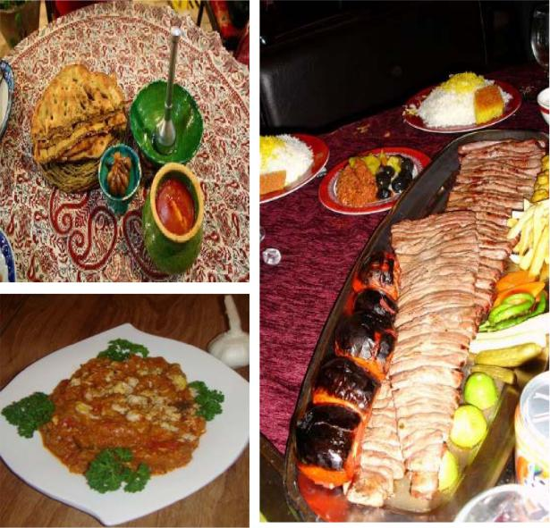

Dars-e 10 — Belit‐e havāpeymā
Matn ♫ Belit‐e havāpeymā
Sārā‐vo Faribā mixāhand dar ta’tilāt‐e nowruzi‐ye emsāl be Esfahān beravand. Ānhā mitavānand bā māšin‐e Faribā beravand. Vali māšin‐e Faribā qadimi‐st va šāyad dar rāh xarāb šavad. Be hamin dalil tarjih midehand ke bā otobus, qatār yā havāpeymā beravand. Ānhā havāpeymā rā entexāb mikonand. Belit‐e havāpeymā az hame gerāntar‐ast vali safar bā havāpeymā tanhā 40 daqiqe tul mikešad. Intowri zamān‐e bištar‐i barā‐ye bāzdid az Esfahān barā‐yešān bāqi mimānad. Barā‐ye safar bā havāpeymā bāyad harce zudtar belithā rā rezerv konand, tā jā namānand.
Pāsox bedeh!
1. Faribā‐vo Sārā mixāhand kojā beravand?
2. Key mixāhand beravand?
3. Cerā nemixāhand bā māšin‐e Faribā beravand?
4. Safar be Esfahān bā havāpeymā ceqadr tul mikešad?
5. Cerā bāyad Sārā‐vo Faribā harce zudtar belithā rā rezerv konand?
Sāxtār Belit‐e havāpeymā
Irān‐o irāni Honar‐e āšpazi‐ye Irān
Goftogu Nāhār key hāzer miše?
Sāxtār
Hāl‐e eltezāmi
| bordan (bar) goftan (gu) raftan (rav) didan (bin) | sāxtan (sāz) xāndan (xān) istādan (ist) māndan (mān) | ||||
| Kārbord | Nemune | Pišvand‐e sarf | Setāk‐e hāl | Šenāse (nemune) | |
| Ārezu | Mixāham – dust dāram – māyel‐am | bar | am. | ||
| Tasmim | Tasmim dāri – qasd dāri | gu | yi. | ||
| Tarjih | Tarjih midehad | rav | ad. | ||
| Niyāz | Lāzem‐ast – niyāz‐ast | bin | im. | ||
| Ejbār | Majbur‐id – nāgozir‐id | sāz | id. | ||
| Vazife | Bāyad | xān | am. | ||
| Tavānāyi | Mitavānand – qāder‐and | be | ist | and. | |
| Ejāze | Ejāze bedehid – begozārid | gu | yam. | ||
| Forsat | Forsat dāram – vaqt dāram – heyf‐ast | rav | am. | ||
| Ehtemāl | Šāyad – momken‐ast – qarār‐ast | mān | im. | ||
| Kefāyat | Kāfi‐st | bin | i. | ||
| Pišnahād | rav | im! | |||
| Darxāst‐e pišnahād | Kojā | rav | im? |
Nokte
- Āvāhā‐ye miyānji va degarguni‐ye be be bi mānand‐e fe’l‐e amri‐st: Bāyad biyāyim. - Hāl‐e eltezāmi‐ye budan bāš‐ast: Mixāham injā bāšam. - Hāl‐e eltezāmi‐ye dāštan dāšte bāš‐ast: Bāyad in ketāb rā dāšte bāšam. - Dar fe’lhā‐ye morakkab va pišvandi gāh‐i az be‐ cešmpuši mišavad: Bāyad tamiz (be)konam. Šāyad dar (biy)āvaram. - Hāl‐e eltezāmi aqlab bā ke hamrāh mišavad: Kāfi‐st, ke yek bār emtehān koni. - Barā‐ye residan be yek hadaf ma’mulan tā be kār miravad: Miravam, tā bebinam.
Jāhā‐ye xāli rā bā hāl‐e eltezāmi por kon!
- Barādar‐am mixāhad dar tābestān be Āmrikā __ (raftan). 2. Mahnāz dust nadārad, hamrāh‐e man __ (āmadan). 3. Parviz mitavānad dar emtehān __ __ (qabul šodan). 4. Mā tasmim dārim, yek šab injā __ (māndan). 5. To nabāyad harf‐e u rā __ __ (guš kardan). 6. Majbur‐im, belit rā hatman fardā __ __ (rezerv kardan). 7. Momken‐ast, man emšab u rā __ (didan). 8. Lāzem‐ast, ke to hatman az u __ __ (ozrxāhi kardan). 9. Begozārid, mā ān rā __ (bordan). 10. Ānhā nabāyad barā‐ye tahvil‐e bār __ __ (montazer māndan). 11. Ejāze bedehid, ke mā kam‐i injā __ (nešastan). 12. Šomā dar in sāhel tolu‐o qorub‐e āftāb rā hatman bāyad __ (didan). 13. Ānhā behtar‐ast, mavādd‐e qazāyi rā az in forušgāh __ (xaridan). 14. To bāyad ketri‐yo quri rā dar āšpazxāne __ (gozāštan).
Jāhā‐ye xāli rā bā fe’l‐e monāseb‐e mosbat yā manfi por kon!
- Mā emšab be teātr __ (raftan). 2. Faribā musiqi rā __ __ (dust dāštan). 3. To bāyad __ (āmadan), tā __ (didan). 4. Belit‐at rā rezerv kon, tā __ (jā māndan). 5. In ketāb rā be Pedar‐at __ (dādan)! 6. Mixāhi barā‐yaš yek ketāb __ (xaridan)? 7. U lāzem nist, ke be donbāl‐e man __ (āmadan). 8. Ānhā bāzi rā dastejam’i __ __ (tamāšā kardan). 9. Bāyad bexāni, tā __ __ (yād gereftan). 10. Tā nabini, __ __ (bāvar kardan). 11. Mošaxxasāt‐e māšin rā injā __ (neveštan)! 12. Movāzeb‐e lab‐o dahān‐at __ (budan)!
Irān‐o irāni – Honar‐e āšpazi‐ye Irān
Kāfi‐st ke yek bār qazā‐ye irāni rā emtehān koni; digar maze‐aš az zir‐e dandān‐at birun nemiravad. Qazāhā‐ye irāni besyār xošmaze, xošbu, xošrang, cešmnavāz va sālem hastand. Honar‐e āšpazi dar Irān pišine‐i kohan dārad. Be dalil‐e hamsāyegi‐ye tārixi‐ye Irān bā tamaddonhā‐ye bozorg‐e jahān āšpazi‐ye irāni yek‐i az kāmeltarin tarkibāt‐e qazāyi‐ye jahān rā dar bar migirad. Barx‐i jāygāh‐e āšpazi‐ye irāni rā dar Āsiyā hamānand‐e jāygāh‐e āšpazi‐ye farānsavi dar Orupā midānand. Šāyad ma’ruftarin qazā‐ye irāni Celowkabāb bāšad. Dar miyān‐e qazāhā‐ye sonnati Dizi yā Ābgušt niz havādārān‐e ziyād‐i dārad. Har mantaqe dar Irān qazāhā‐ye xāss‐e ān mantaqe rā niz dārad. Masalan heyf‐ast, ke be Gilān beravi, vali Mirzāqāsemi naxori.
Pāsox bedeh!
- Qazāhā‐ye irāni ce vižegihā‐yi dārand? 2. Cerā honar‐e āšpazi‐ye irān yek‐i az kāmeltarin tarkibāt‐e qazāyi‐ ye donyā rā šāmel mišavad? 3. Barx‐i āšpazi‐ye irāni rā bā āšpazi‐ye kodām kešvar moqāyese mikonand? 4. Ma’ruftarin qazā‐ye irāni ehtemālan kodām‐ast? 5. Dar Gilān kodām qazā rā bāyad hatman emtehān konim?
Goftogu – Nāhār key hāzer miše?
Bahrām:Māmān, nāhār key hāzer miše?
Mādar:Alān hāzer miše. Lotf kon, miz‐o becin.
Bahrām:Livānā kojā‐n?
Mādar:Tu qafase.
Bahrām:Cangālā kojā‐n?
Mādar:Baqaldast‐et, tu kešow.
Bahrām:Bošqābā ro az kojā var dāram?
Mādar:Az tu komod‐e kenār‐e ojāq. Ceqadr soāl mikoni!
Nokte
| Goftāri | Neveštāri |
| miše | mišavad |
| alān | al’ān |
| miz‐o | miz rā |
| livānā | livānhā |
| kojā‐n | kojā‐yand |
| tu | tu‐ye/dar |
| cangālā | cangālhā |
| baqaldast‐et | baqaldast‐at |
| bošqābā | bošqābhā |
| ro | rā |
| var dāram | bar dāram |
Ebārathā/vāžehā
Sobune (sobhāne) – šām
Kārd – cāqu – kāse – fenjun (fenjān) – pišdasti – sini – dis – zarf – qāšoq
Bufe‐ye otāq‐e nāhārxori – komod‐e baqal‐e yaxcāl – kābinet‐e zir‐e zarfšuyi
Bā estefāde az ebārathā/vāžehā goftogu‐ye bālā rā bā hamkelāsi‐yat tamrin kon! Goftogu‐ye behamrixte rā morattab kon va be zabān‐e neveštāri benevis!
– Na, vali mitunam dorost konam.
– Sup‐e Jow, Jujekabāb‐o berenj.
– Māmān, emšab šām ci dārim?
– Mersi māmān! Pas man polow bā māhi mixoram.
– Māhi‐yam dārim?
__
__
__
__
Vāžehā-ye dars-e
Pasoxhā-ye dars-e
Jāhā‐ye xāli rā bā hāl‐e eltezāmi por kon!
-
- beravad – 2. biyāyad – 3. qabul šavad – 4. bemānim – 5. guš koni – 6. rezerv konim – 7. bebinam – 8. ozrxāhi koni – 9. bebarim
– 10. montazer bemānand – 11. benešinim – 12. bebinid – 13. bexarand – 14. begozāri
Jāhā‐ye xāli rā bā fe’l‐e monāseb‐e mosbat yā manfi por kon!
1. miravim – 2. dust dārad – 3. biyāyi; bebini – 4. jā namāni – 5. bedeh – 6. bexari – 7. biyāyad – 8. tamāšā mikonand – 9. yād begiri – 10. bāvar nemikoni – 11. benevis – 12. bāš
Goftogu‐ye behamrixte rā morattab kon va be zabān‐e neveštāri benevis!
– Māmān, emšab šām ce dārim?
– Sup‐e Jow, Jujekabāb‐o berenj.
– Māhi ham dārim?
– Na, vali mitavānam dorost konam.
– Mersi māmān! Pas man polow bā māhi mixoram.
ābšār водопад ādami кто-то, обобщенное лицо afsus увы alāqe пристрастие ārāmgāh мавзолей ārenj локоть arg замок, крепость asb лошадь atr духи, аромат, парфюм āvāz песня āxarehafte выходные āyande будущий bāq сад, дача bāxtan (bāz) потерять bejoz кроме be šomār āmadan (ā) подсчитывать bigāne иностранный; иностранец biš az больше чем bu запах cāyxāne чайный дом, чайхана dard āvardan (āvar) боль dišab вчера вечером doroške повозка, экипаж dowr-e ham jam’ budan (hast, bāš) быть вместе farāmušnašodani незабываемый farhangi культурный ferestādan (ferest) отправить; послать gardešgari туризм gorbe кошка gowjefarangi помидор(ы) gozaštan (gozar) пройти, перейти, простить hammām ванна; ванная комната havij морковь hedye подарок kāhu салат-латук kāmiyon грузовик kutāh короткие majalle журнал majmue набор, коллекция, комплекс manāteq районы, области mast пьяный mostaqar šodan (šav, šow) оседать naqqāši kardan (kon) краска nārenj померанец, грейпфрут nazdiki близость pā нога pā-ye telefon по телефону pariruz позавчера parišab позавчера вечером; позавчера ночью piyāde šodan (šav, šow) сойти (с транспорта) piyāderow тротуар piyāz лук pompbenzin автозаправочная станция porbāzdid часто посещают postxāne почтовое отделение pul деньги qad(d) размер, длина (в т.ч. тела) qāyeq лодка raqs танец ruberu(-ye) напротив (чего-либо) ruznāme газета sāed предплечье sālād салат šāmpu шампунь savār šodan (šav, šow) садиться (на транспорт) sāxt строительство; производство šekastan (šekan) перерыв šenā плаванье tavallod-at mobārak с днем рождения vān ванна varzeš спорт xiyār огурец xoš хороший, радостный xoš gozaštan (gozar) хорошо провести время zādgāh место рождения zorrat кукуруза